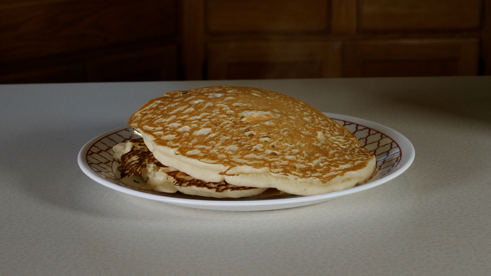

Chef Blair’s Large ‘N Charge Pancake Recipe
A recipe so easy, you'll forget it

Chef Blair is a native Minnesotan currently residing in Milwaukee Wisconsin for the last 2 years. He is known for his famous recipes such as Chef Blair’s Large ‘N Charge Pancake Recipe, Chef’s Blair’s Downright Delicious Deviled Eggs and Chef Blair’s Fantastically Fire Flaming Hot Cheeto Stuffed Turkey. Critics have raved over his recipes with quotes like:
“This isn’t the absolute worse thing I’ve eaten but goddamn, it’s up there.” – Chef Blair’s friend Nick “When he puts the pizza rolls in the oven, you know they will be fire, or on fire.” – Chef Blair’s roommate Connor.
Wondering how to make delicious, fluffy, mega fancy, soft, old fashion pancakes? This homemade pancake recipe by Chef Blair will have mouths watering from miles away. We recommend keeping the windows closed so people don’t get the whiff of these absolutely studded pancakes. Get ready to dig into a stack of pancakes with the easiest recipe you’ve ever seen!
Recipe Ingriendients
Making pancakes this good is actually too easy. Like the pancakes, the ingredients needed are just as easy! (As long as you don’t get lost in the Grocery store... But that’s why I go with my Mom, she also knows what aisle everything in which is super helpful. Sometimes I got to the store and can’t find the milk and give up, so I just buy a Pepsi in the self-checkout. Which doesn’t usually work as well in recipes that require milk.)
This recipe only requires a few simple ingredients. You will need:
Instructions
Combine the flour, sugar, baking powder and salt in a large bowl. If you don’t have a bowl, ask your neighbors. I heard different bowls offer different flavors. So, make sure you they don’t give you a red one, they tend to be on the spicier side. I prefer metallic bowls because I’m iron deficient.
In a large measuring cup, combine the egg, milk, butter and vanilla extract. Then examine the egg making sure it isn’t about to hatch. You don’t want a baby chicken in your pancakes because it’s not in the recipe.
Add the wet ingredients to the dry ingredients and gently fold them together until well combined, but still a little lumpy. You don’t want to over mix them, or they could end up less fluffy and tough. The batter should be relatively thick, but easily pourable. Basically you’ll never know when it’s good enough until you’ve over done it.
Set the batter aside to rest while you heat the griddle, 5-10 minutes. If you forget where you put the batter. Go ahead and repeat steps 1-3 and come back. Once you have remade the batter, I bet you’ll find where you put the other thing of batter. That is ok, maybe invite your neighbors over and say you are making Chef Blair’s Large ‘N Charge Pancakes and they won’t be able to say no, especially if you have their bowl. Once you have done that, the griddle should be hot enough. Any remaining lumps in the batter will start to soften as the moisture soaks in. Gently stir again.
Heat a griddle or non-stick pan over medium-low heat and melt a little butter to grease it. Pour batter onto the pan until it is leaking over the edge and let it spread out into an overwhelming giant round pancake. I used about 3-25 tablespoons of batter per pancake.
Allow the pancake to cook until bubbles appear on the surface and the edges are set, then flip and cook until it is completely charred up. Once you have your obligatory terrible pancake, Allow the pancake to cook until bubbles appear on the surface and the edges are set, then flip and cook until it is a golden crisp.
Continue cooking with the remaining batter, make sure you remove the previous pancake before adding more batter, or don’t I can’t tell you what to do, live your life.
Serve pancakes with maple syrup or your choice of toppings. Or don’t. Or don’t eat them. Or give them to your neighbors and let them eat them with your choice of toppings. Or give them to your neighbors and let them eat it with their choice of toppings. Or put them in your fridge and save them for later. Or put them in your fridge and save them for later then give them to your neighbors and let them eat it with their/your choice of toppings.